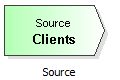

The starting point of the client's movement through a queueing model is the source (in the queueing theory, the term "client" is almost always used for the elements moving through the system even if they are workpieces, orders, etc.).
To add an element - in this case a source - to the model, drag it with pressed left mouse button to the drawing surface.
Drag this element from the templates panel to the draw surface:
